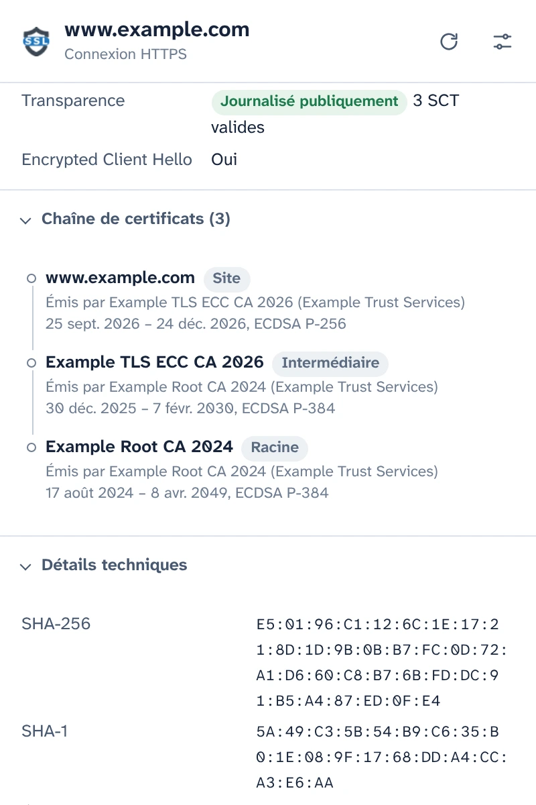
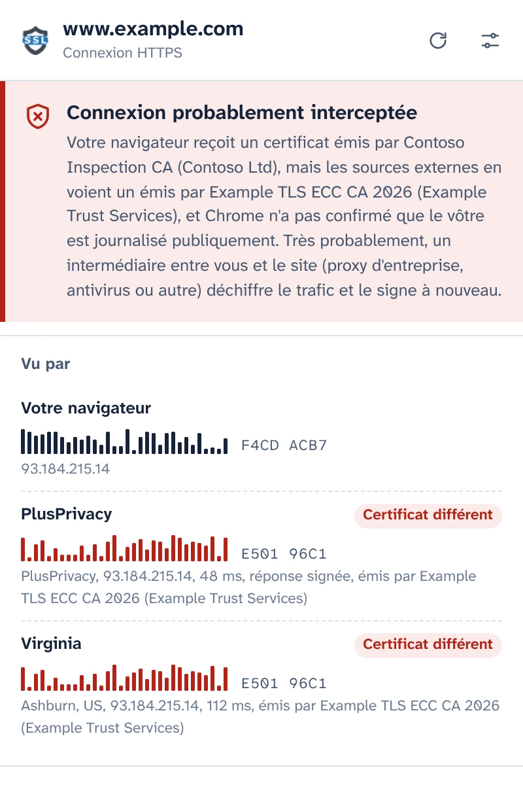
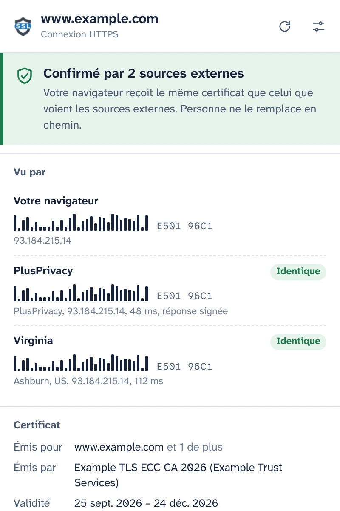
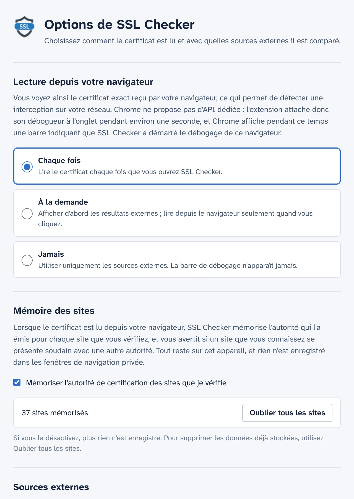

Voyez le certificat que votre navigateur a réellement reçu
SSL Checker lit le certificat du site ouvert dans votre onglet directement dans Chrome et le compare avec celui que voient des notaires indépendants depuis d'autres points d'Internet. S'ils diffèrent, un intermédiaire entre vous et le site le remplace.
Gratuit et open source. Aucun compte, aucune mesure d'audience.
Confirmé par 2 sources externesConnexion probablement interceptée
Votre navigateur reçoit le même certificat que celui que voient les sources externes. Personne ne le remplace en chemin.Votre navigateur reçoit un certificat émis par Contoso Inspection CA, mais les sources externes en voient un émis par Example TLS ECC CA 2026.
- Votre navigateur E501 96C1F4CD ACB7
- PlusPrivacy IdentiqueCertificat différent E501 96C1
- Virginia IdentiqueCertificat différent E501 96C1
Tous les détails de la connexion
Ce que Chrome a reçu pour cet onglet, lu depuis le navigateur lui-même plutôt que récupéré à nouveau auprès d'un serveur.
- Noms couverts, émetteur, validité et jours restants, niveau de validation (DV, OV, EV)
- Version de TLS, échange de clés (hybrides post-quantiques compris), chiffrement et Encrypted Client Hello
- Statut Certificate Transparency et horodatages signés de certificat (SCT)
- La chaîne complète, les empreintes et toutes les extensions. Copiez le PEM ou téléchargez la chaîne.

Détectez les interceptions HTTPS
Les proxys d'entreprise, l'analyse HTTPS des antivirus et les attaquants sur les réseaux Wi-Fi publics procèdent de la même façon : ils déchiffrent votre trafic et remettent à votre navigateur un certificat qui leur est propre. La page a l'air normale et le cadenas reste affiché.
SSL Checker demande au notaire PlusPrivacy, et à tout notaire que vous ajoutez, quel certificat le même site leur présente. Ils se connectent depuis d'autres points d'Internet, en contournant ce qui se trouve sur votre réseau, et les empreintes sont comparées :
- Même certificat partout : confirmé.
- Le vôtre est différent et non journalisé publiquement : interception probable. SSL Checker nomme l'autorité qui a émis le certificat de remplacement et reconnaît les produits d'inspection connus.
- Les sources divergent entre elles : c'est signalé comme tel, avec ce que chaque cas peut signifier.

Des réponses qu'aucun intermédiaire ne peut falsifier
Un intermédiaire qui intercepte votre trafic pourrait aussi tenter de répondre au nom d'un notaire. Il n'y parviendrait pas : le notaire PlusPrivacy signe chaque réponse avec Ed25519, et SSL Checker vérifie la signature, un nombre aléatoire envoyé avec chaque question et le site sur lequel portait la question. Une réponse falsifiée, rejouée ou redirigée est refusée, et le pop-up indique qu'elle a été modifiée.
Installez votre propre notaire
Le notaire est open source : un petit service Node.js pour Docker, protégé contre les afflux massifs de requêtes et contre les requêtes vers des réseaux privés. Installez-le sur n'importe quel serveur, ajoutez son adresse et sa clé dans les options, et ses réponses seront vérifiées de la même façon.

Vous décidez quand le débogueur intervient
Chrome ne propose aucune API d'extension pour le certificat d'une page chargée : SSL Checker attache donc le débogueur de Chrome à l'onglet le temps de le lire, environ une seconde, et Chrome affiche alors sa barre de débogage. Dans les options, vous choisissez quand cela se produit :
- Chaque fois que vous ouvrez le pop-up
- À la demande, d'un clic dans le pop-up
- Jamais : seuls les notaires sont interrogés
Il mémorise les sites que vous vérifiez
SSL Checker mémorise l'autorité de certification utilisée par chaque site et vous avertit si un site que vous connaissez se présente soudain avec une autre, par exemple sur un nouveau réseau Wi-Fi. Cette mémoire reste sur votre appareil, n'est jamais utilisée dans les fenêtres de navigation privée et peut être désactivée ou effacée dans les options.

Confidentialité dès la conception
- Rien n'est lu ni envoyé avant que vous ayez donné votre accord dans le pop-up.
- Seuls le nom d'hôte et le port du site quittent votre appareil, dans le corps d'une requête HTTPS adressée aux notaires que vous utilisez.
- Le notaire PlusPrivacy ne conserve aucune trace des sites vérifiés. Vous pouvez le désactiver, ou n'interroger que des notaires que vous gérez vous-même.
- Aucune mesure d'audience, aucun suivi, aucun compte. La mémoire des sites ne quitte jamais votre appareil.
- Ce site Web n'utilise pas non plus de mesure d'audience et ne charge rien depuis d'autres serveurs.
POST /v1/cert
Content-Type: application/json
{
"host": "www.example.com",
"port": 443,
"nonce": "Xq3MpTb0vR9kLs2eWn5yZA"
}